| Satellite | Anni | Ris. Spaz. | Ris. Temp. | Tot. Img |
|---|---|---|---|---|
| Landsat 5 (TM) | 1993-2001; 2004-2011 | 30m | 16 giorni | 34 |
| Landsat 7 (ETM+) | 2002 | 30m | 16 giorni | 2 |
| Landsat 8 OLI | 2014-2016 | 30m | 16 giorni | 6 |
| Sentinel-2 (MSI) | 2017-2020 | 20m | 5 giorni | 8 |
L’utilizzo degli indici spettrali per il calcolo dell’area emersa
Andrea Titolo (Università di Torino)
Struttura intervento
- Introduzione
- Problematiche da affrontare
- Metodologia e workflow
- Scelta immagini satellitari
- Elaborazione Time-Series NDWI
- Processing delle immagini
- Calcolo della percentuale di superficie emersa
- Risultati
Introduzione
1 2 3 4
Introduzione: domande di ricerca
1 2 3 4
Come possiamo identificare quali siti hanno subito l’effetto dalle fluttuazioni del livello dell’acqua?
Quali sono gli effetti (erosione/sepoltura) della prolungata sommersione di questi siti?
Come documentare, monitorare, salvaguardare e pianificare delle operazioni di salvataggio?
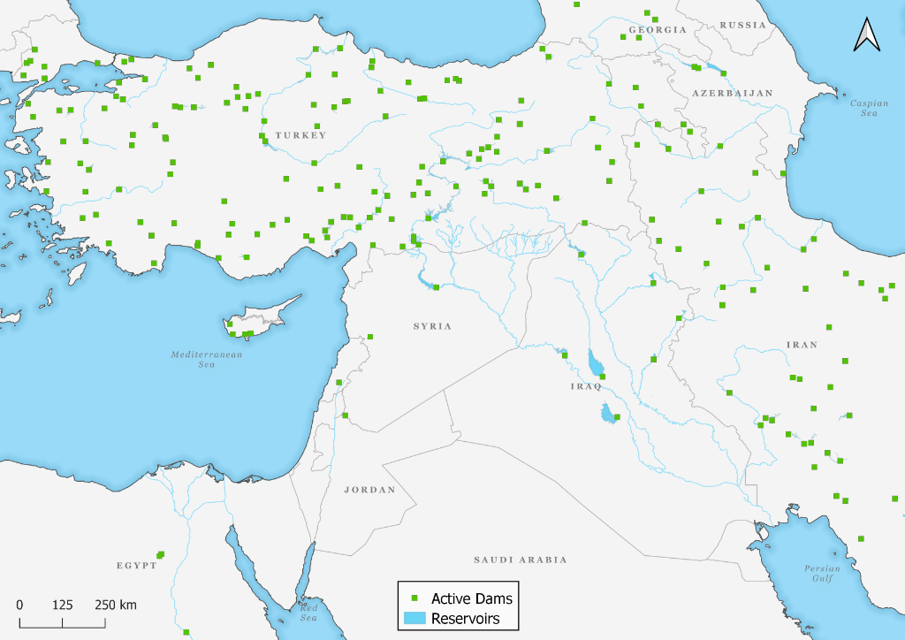
Problematiche da affrontare
1 2 3 4
Il processo necessario per rispondere alle domande di ricerca è teoricamente semplice:
- identificare l’acqua su immagini satellitari
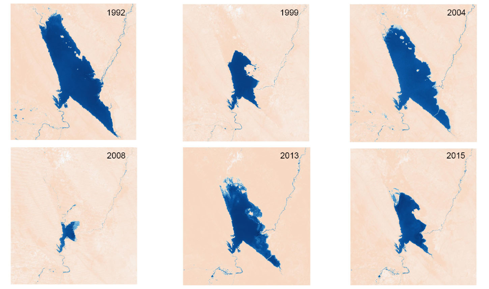
Problematiche da affrontare
1 2 3 4
Il processo necessario per rispondere alle domande di ricerca è teoricamente semplice:
- identificare l’acqua su immagini satellitari
L’identificazione sfrutta il modo in cui l’acqua riflette ed assorbe la luce solare a diverse frequenze e lunghezze d’onda.
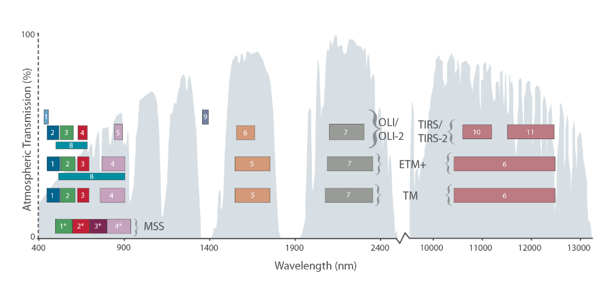
Alternative a disposizione per l’estrazione dell’acqua
1 2 3 4
Density Slicing
- Utilizzato ad es. da Marchetti et al. (2019)
- Utilizza una banda sola (NIR, miglior risultati delle bande del visibile)
- Problematiche
- rischia di introdurre errori dovuti alla presenza di ombre (rilievi e aree urbane).
Tasselated Cap Transformation
- Sistema per migliorare le informazioni contenute nelle bande spettrali
- Comprime tutte le informazioni in tre bande: greeness, brightness, wetness
- Problematiche
- Sovrastima la presenza di acqua, non elimina ombre.
Alternative a disposizione per l’estrazione dell’acqua
Indici spettrali
1 2 3 4
- Combinazioni di più bande (solitamente due).
- Gli indici spettrali sono combinazioni di riflettanza spettrale (percentuale di radiazione riflessa) da due o più lunghezze d’onda che indicano l’abbondanza relativa di caratteristiche di interesse.
- Risultati più robusti, permettono di eliminare elementi intrusivi
\(Indice= \frac{Banda1 - Banda2}{Banda1 + Banda2}\)
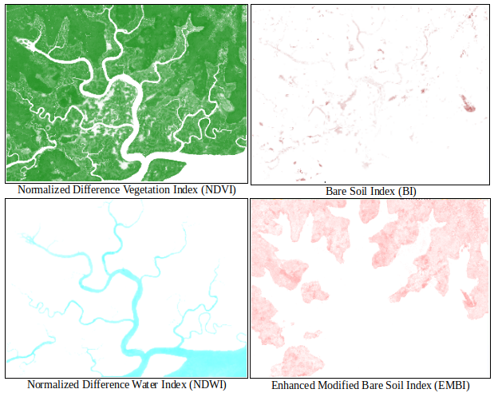
NDWI
1 2 3 4
\(NDWI_{McFeeters}= \frac{Green - NIR}{Green + NIR}\)
\(NDWI_{xu}= \frac{Green - SWIR}{Green + SWIR}\)
Risultato
- Interpretazione dei valori sulla base di un threshold arbitrario
- se il valore del pixel nell’immagine è maggiore di 0 = acqua
- se il valore è < 0 = terra
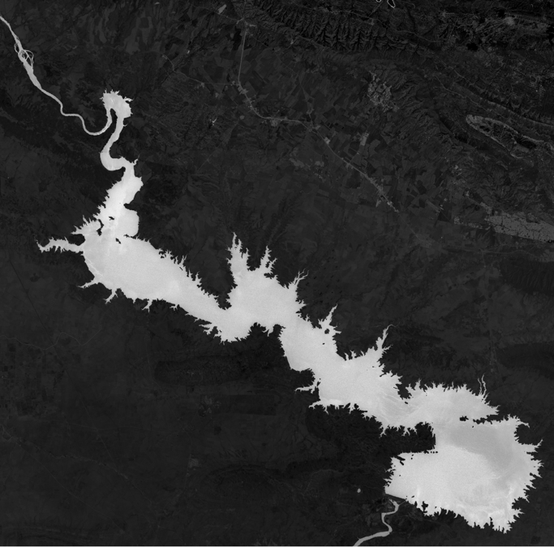
NDWI
1 2 3 4
\(NDWI_{McFeeters}= \frac{Green - NIR}{Green + NIR}\)
\(NDWI_{xu}= \frac{Green - SWIR}{Green + SWIR}\)
Risultato
- Interpretazione dei valori sulla base di un threshold arbitrario
- se il valore del pixel nell’immagine è maggiore di 0 = acqua
- se il valore è < 0 = terra
1 2 3 4
\(NDWI_{xu}= \frac{Green - SWIR}{Green + SWIR}\)
Vantaggi
- Miglior discriminazione delle aree urbane vicine all’acqua grazie alla banda dell’infrarosso ad onda corta (SWIR).
- SWIR funziona meglio rispetto al NIR quando non è presente densa vegetazione attorno all’acqua.
Preparazione
1 2 3 4
- Scelta immagini satellitari1
- Elaborazione Time-Series NDWI
- Processing delle immagini
- Calcolo della percentuale di superficie emersa
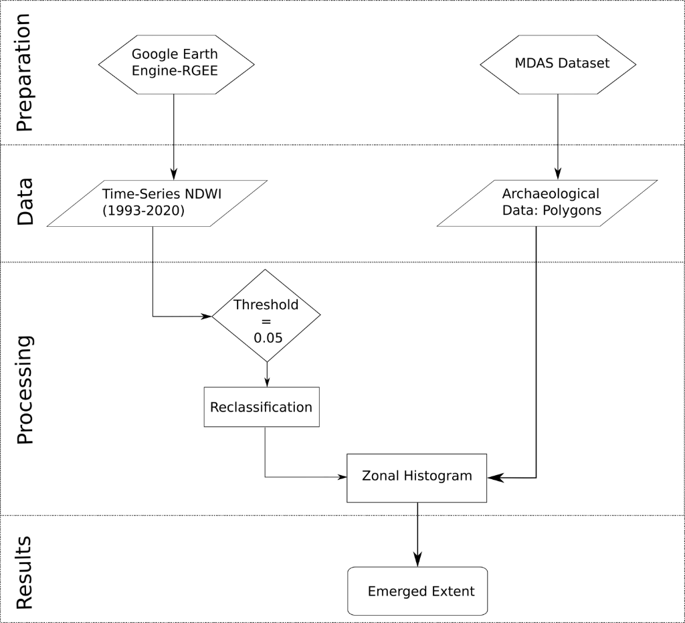
Preparazione
1 2 3 4
Area Studio ✔️
Siti archeologici ✔️
- 275 siti su un’area delimitata sulla base della massima estensione registrata del lago (2002)
- Piattaforma GIS per analisi geospaziali (QGIS)
- Piattaforma per processare un elevato numero di immagini
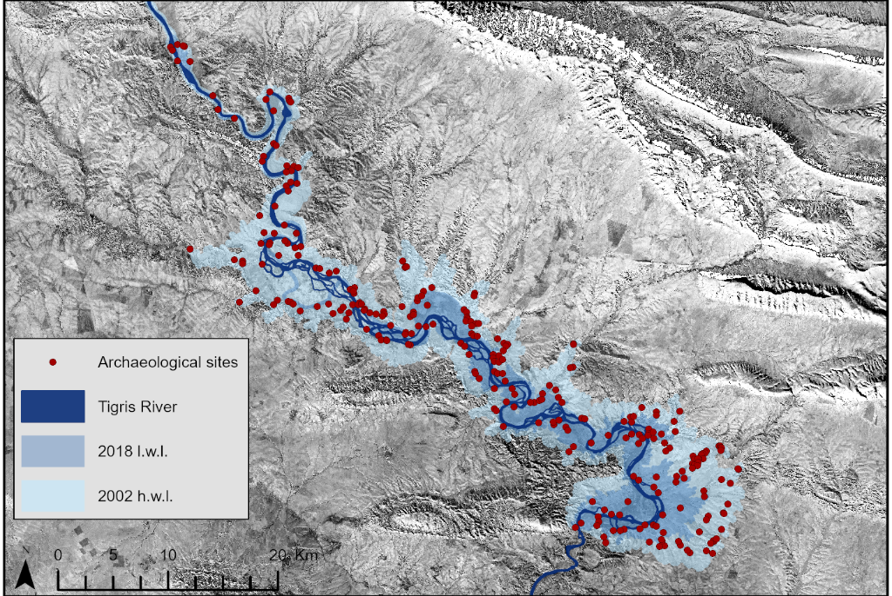
Google Earth Engine (GEE)
1 2 3 4
- Piattaforma di cloud computing per dati geospaziali lanciata nel 2017 (Gorelick et al. 2017).
- Combina un catalogo gigantesco (petabytes) di immagini satellitari e dati geospaziali.
- Permette di utilizzare algoritmi complessi in maniera molto veloce.
- Sebbene stiano aumentando le webapp a disposizione, l’utilizzo di GEE richiede ancora una conoscenza di Javascript per poter essere sfruttato al massimo.
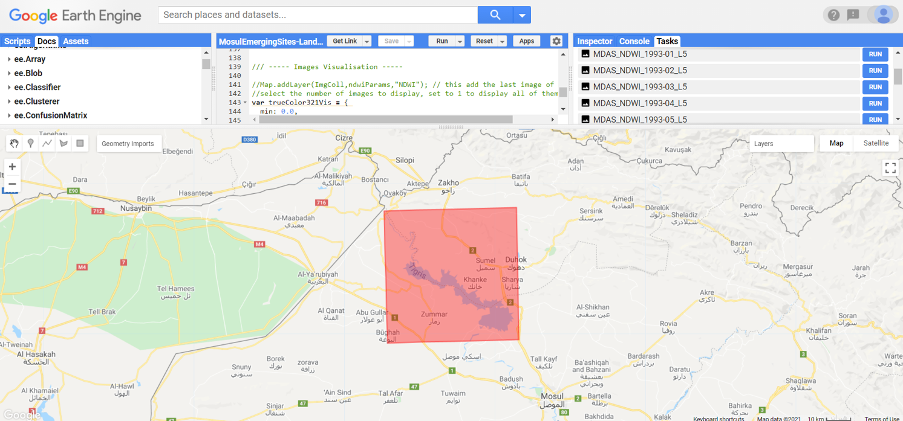
L’elaborazione
1 2 3 4
- Scelta immagini satellitari
- Elaborazione Time-Series NDWI
- Processing delle immagini
- Calcolo della percentuale di superficie emersa
- Risultati
Scelta delle immagini satellitari
1 2 3 4
- Database for Hydrological Time Series of Inland Waters (DAHITI) (Schwatke et al. 2015).
- Fornisce un dato di confronto per valori massimi e minimi del livello dell’acqua
- Permette di associare il risultato dell’analisi ad un valore preciso
- Ha fornito uno strumento per limitare la finestra temporale d’analisi
- Obiettivo: ricostruire la storia di emersione e sommersione dei siti archeologici
- Periodi di massima (h.w.l.) e minima (l.w.l.) su cui concentrare l’analisi
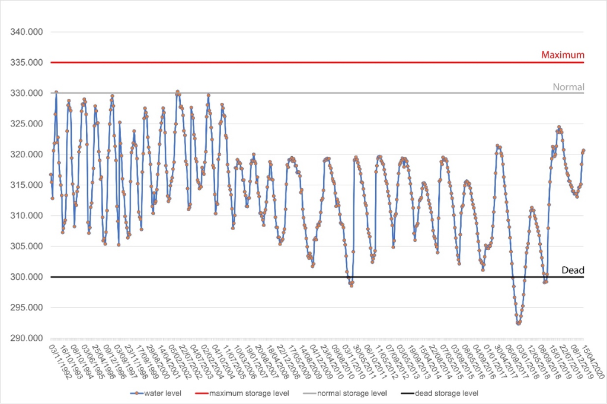
Calcolo NDWI
1 2 3 4
- Monthly Composites
- Creati calcolando la media dei valori NDWI per ogni pixel di ogni immagine che rientrasse nell’intervallo mensile.
- Aiuta a ridurre la presenza di ombre causate da nuvole o rilievi.
- Due mesi l’anno filtrati grazie ai dati DAHITI.
| Date l.w.l. | Date h.w.l. | Max. Water Level | Min Water Level |
|---|---|---|---|
| 2002-11 | 2002-07 | 314,443 | 327,871 |
| 2007-09 | 2007-07 | 313,142 | 318,879 |
| 2018-01 | 2018-06 | 292,862 | 311,833 |
In Google Earth Engine
1 2 3 4
Il codice Javascript permette di effettuare le analisi in pochi minuti.
var S2monthmap = function(m){
var start = ee.Date(m);
var end = ee.Date(m).advance(1,'week'); //take one image per week
var date_range = ee.DateRange(start,end); // until the end of the month
var name = area.cat(start.format('YYYY-MM-dd')).cat(sensor);
var ImgMonth = ee.ImageCollection('COPERNICUS/S2_SR')
.filterDate(date_range)
.filterBounds(study_region)
.filter(ee.Filter.lt("CLOUDY_PIXEL_PERCENTAGE", 25)) //Select images with less clouds
.map(maskS2clouds_sr)
.map(getNDWI) // get the NDWI band
.map(function(img){return img.clip(study_region)});
return(ImgMonth.median().set({name: name})); // take the median
};
var list_of_S2monthly_images = S2MonthstartDates.map(S2monthmap);
var S2MonthlyColl = ee.ImageCollection(list_of_S2monthly_images);Operazioni post-elaborazione
1 2 3 4
- Scelta immagini satellitari
- Elaborazione Time-Series NDWI
- Processing delle immagini
- Calcolo della percentuale di superficie emersa
- Risultati
Riclassificazione delle immagini
1 2 3 4
- Per calcolare il cambiamento temporale all’interno dell’area del sito, è necessario avere valori univoci da quantificare.
- Riclassificazione in QGIS
\(Land < 0 > Water\)
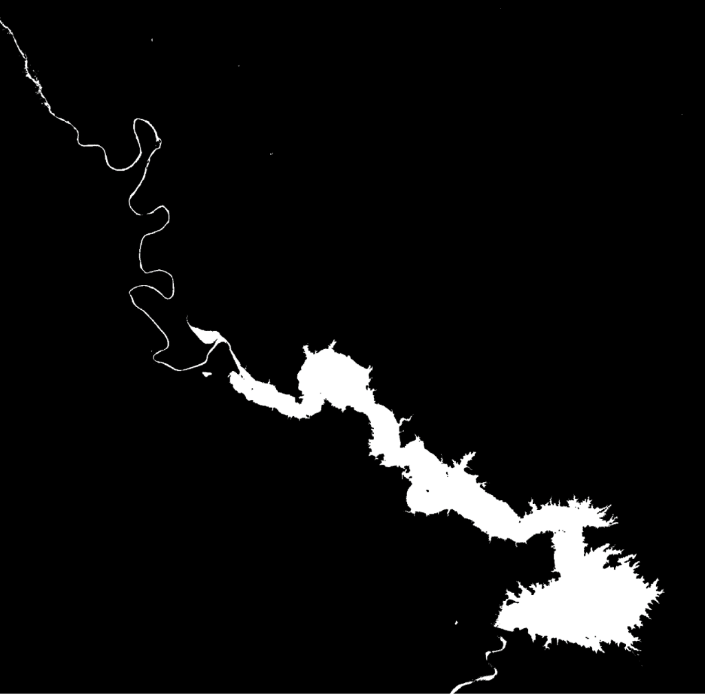
Threshold
1 2 3 4
- Nonostante la scelta della formula e delle bande più adatte al nostro caso studio, c’era ancora qualche imperfezione nelle immagini risultanti, causato principalmente da ombre.
- La sperimentazione del threshold è manuale ed arbitraria (anche lo 0 iniziale è una convenzione).
- Un threshold di 0.05 elimina gran parte del rumore di fondo senza alternare sensitivamente i risultati
\[Land < 0 > Water\] \[Land < 0.05 > Water\]
Ovviamente serve una misurazione qualitativa delle capacità e risultati delle nostre scelte
Threshold
1 2 3 4
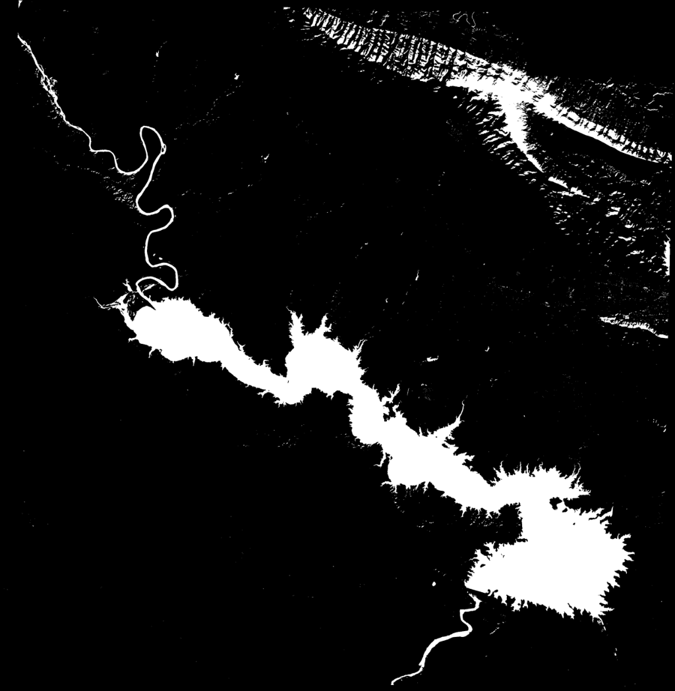
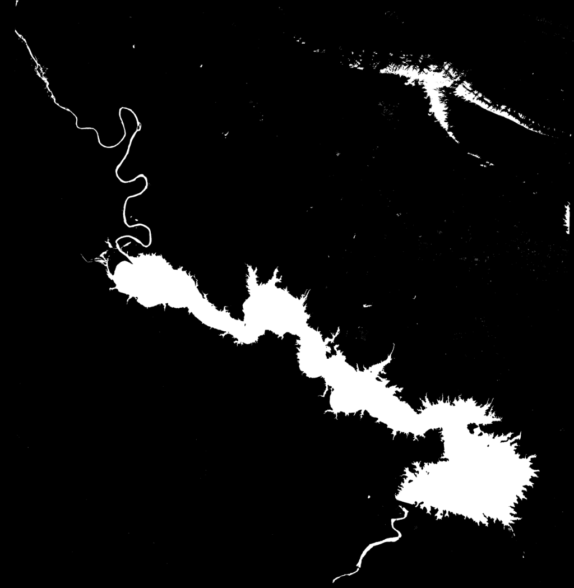
Valutazione dell’accuratezza della riclassificazione
1 2 3 4
- Il c.d. confusion matrix serve a fornire una misura qualitativa di quanto accurata è la nostra riclassificazione
- capita spesso che per diversi fattori come la risoluzione dell’immagine utilizzata, la natura del suolo, ecc. un pixel venga registrato come falso positivo
Valutazione dell’accuratezza della riclassificazione
1 2 3 4
- Il c.d. confusion matrix serve a fornire una misura qualitativa di quanto accurata è la nostra riclassificazione
- capita spesso che per diversi fattori come la risoluzione dell’immagine utilizzata, la natura del suolo, ecc. un pixel venga registrato come falso positivo
| Satellite Images | Overall Accuracy | Producer’s Accuracy | User’s Accuracy |
|---|---|---|---|
| Landsat 5 | 98.01% | 98.63% | 94.74% |
| Landsat 7 | 98.59% | 100% | 95.22% |
| Landsat 8 | 98.36% | 99.24% | 95.08% |
| Sentinel-2 | 98.36% | 99.24% | 94.99% |
Istogramma zonale
1 2 3 4
- Limitazioni:
- Risoluzione spaziale delle immagini dei satelliti di ingresso.
- Affidabilità della localizzazione e dell’estensione dei siti archeologici.
- Nessuna informazione diretta sull’accessibilità di questi siti o sul loro stato di conservazione.
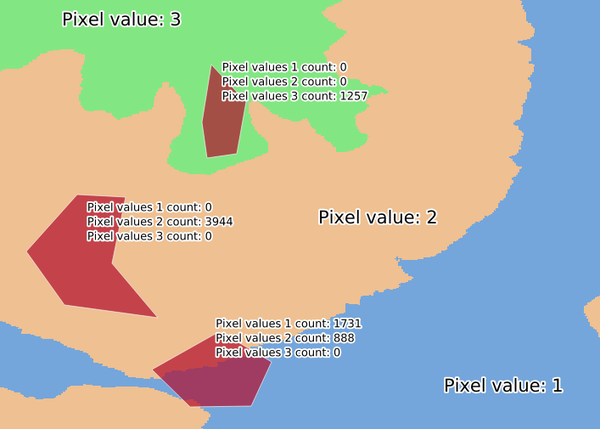
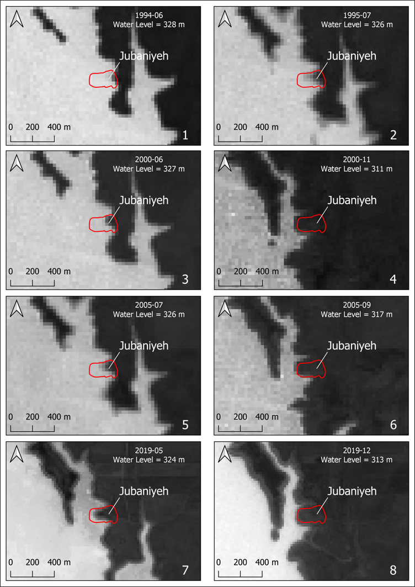
Risultati
1 2 3 4
- Scelta immagini satellitari
- Elaborazione Time-Series NDWI
- Processing delle immagini
- Calcolo della percentuale di superficie emersa
- Risultati
Risultati generali
1 2 3 4
- I siti che durante l’intero periodo di studio (1993-2020) sono stati sempre sommersi (mai esposti, in nero)
- Siti sempre esposti (mai sommersi, in grigio)
- Siti che nel periodo di studio sono stati affetti dalla fluttuazione del livello dell’acqua (affetti ciclicamente), ulteriormente suddivisi in:
- Siti sempre sommersi all’h.w.l. dell’anno (sempre sommersi all’h.w.l., in rosso)
- Siti emersi ciclicamente (affetti, in giallo)
- Siti che sono sempre riemersi alla l.w.l. dell’anno (sempre esposti alla l.w.l., in verde)
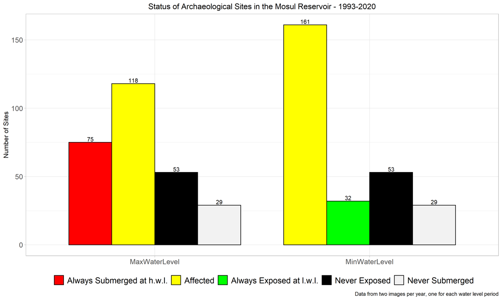
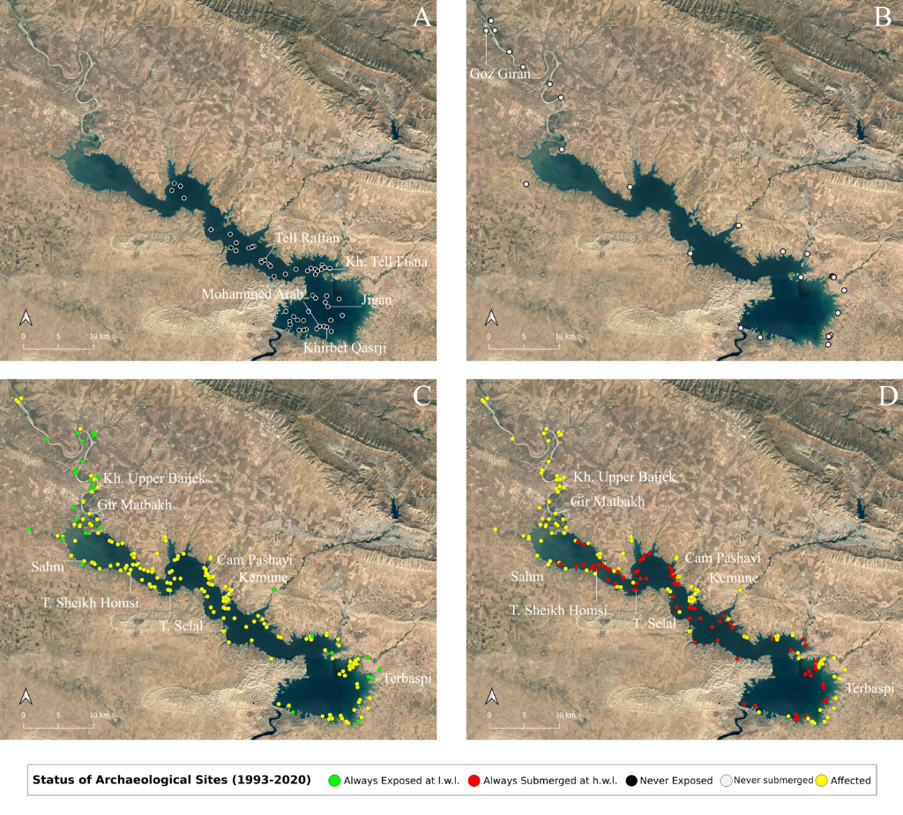
Risultati generali
1 2 3 4
- 53 siti sempre sommersi all’h.w.l. dell’anno (sempre sommersi all’h.w.l., in rosso)
- Si trovano sul fondo del bacino, vicino alla diga stessa. La maggior parte sono insediamenti a cumulo. Molti sono stati scavati durante le attività di recupero prima dell’inondazione del lago artificiale
- 29 siti emersi ciclicamente (affetti, in giallo)
- Si trovano ai margini del lago artificiale (a SE e all’estremo NW). In caso di aumento del livello del lago oltre il massimo finora raggiunto, sono le prime ad essere colpite e sommerse. Registrati dalle indagini moderne, ossia EHAS e LoNAP. Quasi la metà di essi sono insediamenti a tumulo, seguiti da siti e strutture pianeggianti.
- 193 siti che sono sempre riemersi alla l.w.l dell’anno (sempre esposti alla l.w.l., in verde).
- Estensioni diverse ai due estremi del livello minimo e massimo dell’acqua (C e D). Per lo più si tratta di insediamenti pianeggianti, strutture, cimiteri.
Ispezione annuale dei risultati time-series
1 2 3 4
Il numero di siti esposti ha raggiunto il picco nel 2010-2011 e nel 2015-2018, quando oltre il 75% dei siti è riemerso.
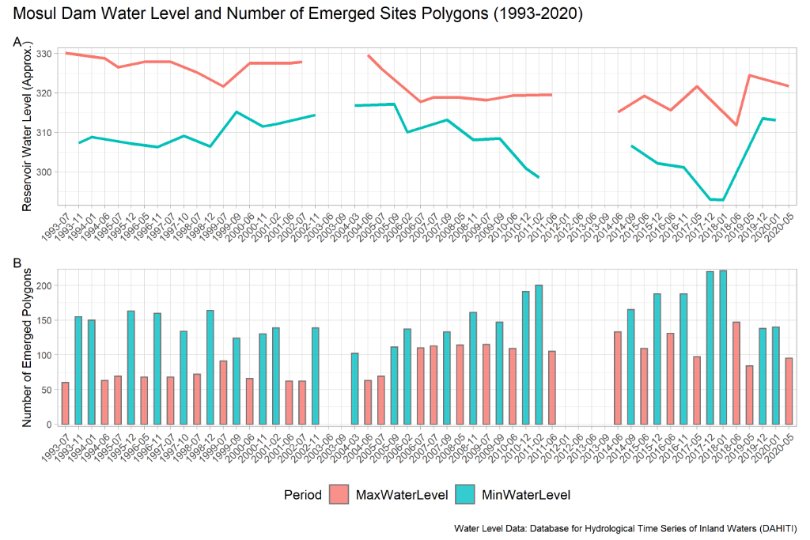
Ispezione annuale dei risultati time-series
1 2 3 4
Durante anni con livelli d’acqua simili emerga un numero simile di siti - Molto utile per la prevenzione e pianificazione di attività.
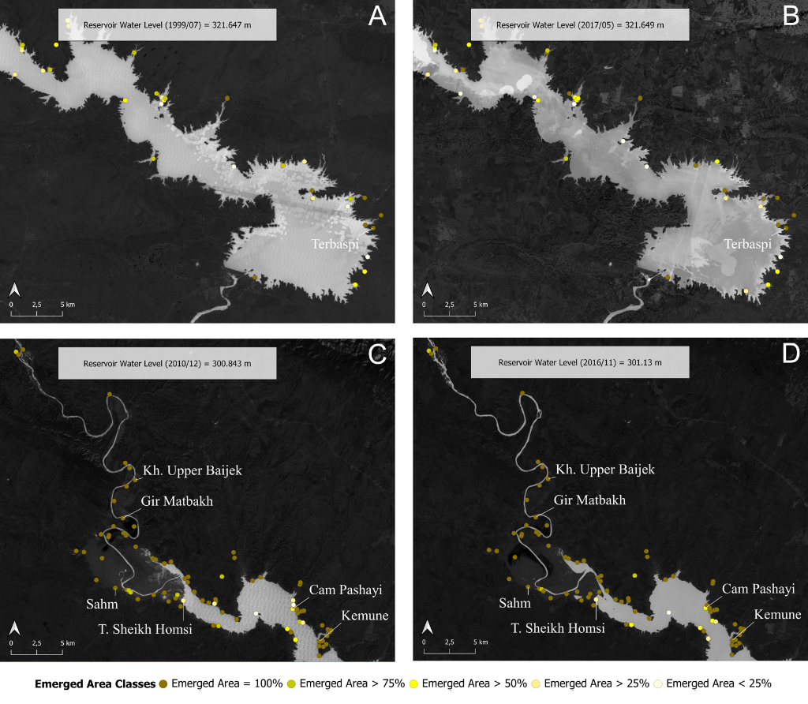
Ispezione annuale dei risultati time-series
1 2 3 4
I cambiamenti improvvisi del livello dell’acqua del lago nello stesso anno (anche solo per pochi mesi) fanno emergere diversi siti dalle acque di riflusso
Estrazione della percentuale di area esposta per singoli siti
1 2 3 4
- siti non colpiti o sommersi solo brevemente durante gli episodi di massimo livello dell’acqua
- siti che sono riemersi solo durante le fasi di forte riduzione del volume del lago
- la maggior parte dei siti, che sono riemersi per lo più durante i periodi di l.w.l.
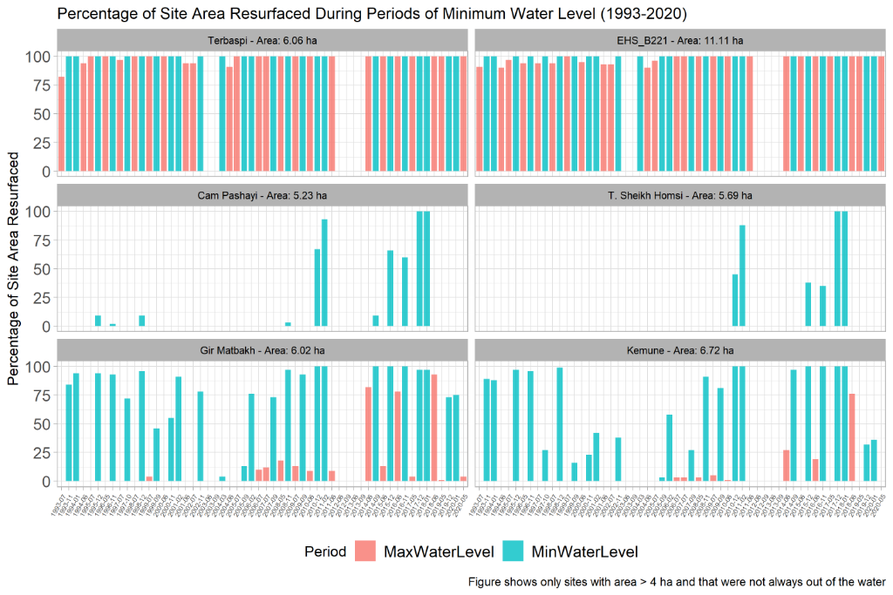
Ricostruire la storia dei siti
1 2 3 4
Il dataset di alta qualità e l’analisi nel lungo termine permettono di indagare singoli siti se necessario
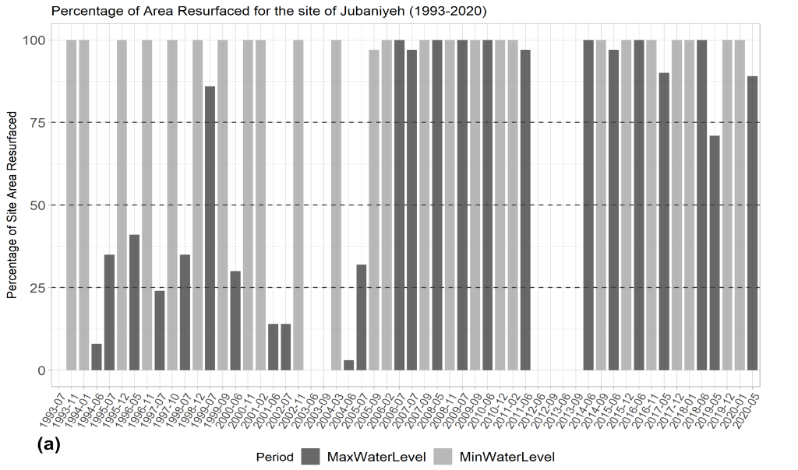
Open-source e riproducibilità
1 2 3 4
“Tools that do not facilitate well-documented, transparent, portable and reproducible data analysis workflows may, at best, result in irreproducible, unextendable research that does little to advance the discipline” (Marwick 2017).
Riproducibilità della metodologia
1 2 3 4
Codice GEE può essere condiviso
Linguaggio per analisi statistica (R/Python) e relativa IDE
Tutti i passaggi eseguiti in GEE e QGIS sono stati riprodotti in R tramite due librerie principali


Condivisione ed archiviazione
1 2 3 4
- Utilizzo del controllo versione durante il lavoro (git)
- Diffusione del codice online (github)
- Archiviazione codice con identificatori univoci es. DOI (zenodo)


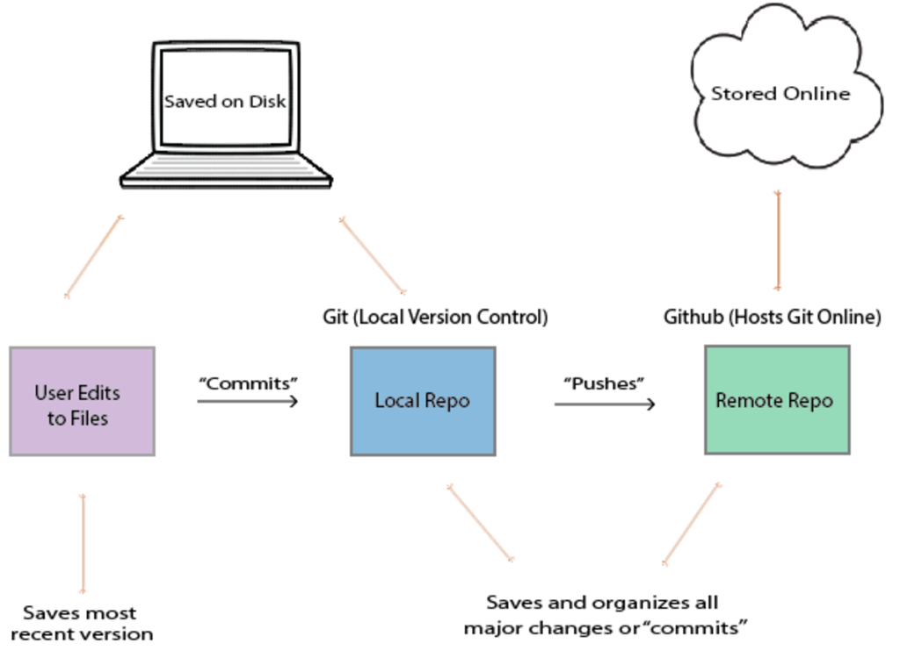
Grazie per l’attenzione!
Andrea Titolo (titoloandrea@gmail.com)
Link alla presentazione: https://codeberg.org/titoloandrea/SeminarioPalermoJan2023
Lavori citati
Deer, P. J., Eklund, P. W. and Norman, B. D. (1996). A Mahalanobis distance fuzzy classifier. 1996 Australian New Zealand Conference on Intelligent Information Systems. Proceedings. ANZIIS 96.
Fisher, P. (1997). The pixel: A snare and a delusion. International Journal of Remote Sensing 18: 679–685.
Gorelick, N., Hancher, M., Dixon, M., Ilyushchenko, S., Thau, D. and Moore, R. (2017). Google Earth Engine: Planetary-scale geospatial analysis for everyone. Remote Sensing of Environment 202: 18–27.
Marchetti, N., Curci, A., Gatto, M. C., Nicolini, S., Mühl, S. and Zaina, F. (2019). A multi-scalar approach for assessing the impact of dams on the cultural heritage in the Middle East and North Africa. Journal of Cultural Heritage 37: 17–28.
Marwick, B. (2017). Computational Reproducibility in Archaeological Research: Basic Principles and a Case Study of Their Implementation. Journal of Archaeological Method and Theory 24: 424–450.
McFeeters, S. K. (1996). The use of the Normalized Difference Water Index (NDWI) in the delineation of open water features. International Journal of Remote Sensing 17: 1425–1432.
Remón, A., Sánchez, S., Bernabé, S., Quintana-Ortí, E. S. and Plaza, A. (2013). Performance versus energy consumption of hyperspectral unmixing algorithms on multi-core platforms. EURASIP Journal on Advances in Signal Processing 2013: 1–15.
Schwatke, C., Dettmering, D., Bosch, W. and Seitz, F. (2015). DAHITI an innovative approach for estimating water level time series over inland waters using multi-mission satellite altimetry. Hydrology and Earth System Sciences 19: 4345–4364.
Titolo, A. (2021). Use of Time-Series NDWI to Monitor Emerging Archaeological Sites: Case Studies from Iraqi Artificial Reservoirs. Remote Sensing 13: 786.
Xu, H. (2006). Modification of normalised difference water index (NDWI) to enhance open water features in remotely sensed imagery. International Journal of Remote Sensing 27: 3025–3033.